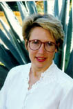

Home | People | Research | Publications | Tech Transition | Events | Partnerships | About ISR | Contact Us
ISR Colloquium
|  |
The Interaction
of Community and Individual Practices |
April 9, 2004
Faculty Host:
Gloria Mark, gmark @ ics.uci.edu
RSVP: Email RSVP required to Steve Ponting at sponting
@ ics.uci.edu by
Tuesday, April 6.
Location: ICS2 136
Cost: No cost to attend.
Abstract: For a single digital library to serve multiple communities,
design must be based on an understanding of practices in each of the communities
and of relationships between those practices. I will describe findings
from two large, collaborative research projects, the Alexandria Digital Earth
Prototype
(ADEPT) and the Center for Embedded Networked Sensing (CENS). Our findings
suggest that users’ roles, and the degree to which those roles are based
on individual or community interests, is an important determinant of how and
whether they will use a digital library. In turn, the effect of users’ roles
varies by the type of content in the digital library (i.e., primary vs. secondary
sources) and by the user’s level of expertise in the knowledge domain.
Despite these complicating factors, digital libraries have the potential to
align the activities of scientists and students by providing context for the
scientific process and by representing data in ways that are useful for multiple
purposes.
About the Speaker: Christine L. Borgman holds the Presidential Chair in Information Studies at UCLA, where she is a Professor in the Department of Information Studies. Prof. Borgman’s teaching and research interests include digital libraries, human-computer interaction, information-seeking behavior, learning in science, scholarly communication, electronic publishing, bibliometrics, and information technology policy. She is a co-principal investigator for the Center for Embedded Networked Systems (CENS) and for the Alexandria Digital Earth Prototype (ADEPT) project, both funded by the National Science Foundation. Her research also has been funded by the Andrew W. Mellon Foundation, the Alfred P. Sloan Foundation, the Spencer Foundation, the Council on Library Resources, the British Library, and UCLA sources, including the Center for European and Russian Studies, International and Overseas Programs, Center for the Study of Women, and the Academic Senate. She served as Chair of the Department of Library and Information Science (since renamed Department of Information Studies) from 1995 to 1997. From 1996-2002 she was also Visiting Professor in the Department of Information Science at Loughborough University in England. She was a Fulbright Visiting Professor at the University of Economic Sciences and at Eötvös Loránd University in Budapest, Hungary, and a Scholar-in-Residence at the Rockefeller Foundation Study and Conference Center in Bellagio, Italy. She has lectured or conducted research in more than 20 countries.